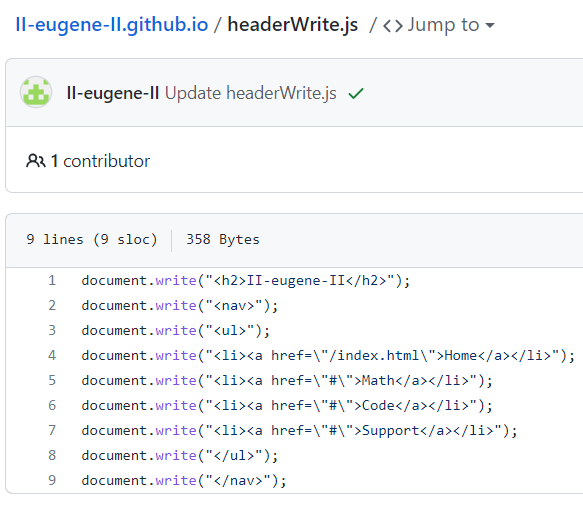

다시 메인 페이지로 돌아가기 home
기존에 홀로 있던 메인페이지에 개발 일지 페이지와 시험용 메모장 페이지 개설

소수 판별기 추가

소수 판별기 작동 전 모습입니다.
CSS로 조금 꾸며서 기본적인 딱딱한 버튼 대신 조금 부드러워 보이는 모습입니다. 그럼에도 home 버튼은 확실히 꾸며야겠다는 생각이 듭니다.

소수 판별기 작동 후 모습입니다.
어떤 수를 입력하면 소수 여부를 띄워주고, 계산 시간이 얼마나 걸렸는지 알려줍니다. (사용자 기기별로 상이함)

합성수를 입력했을 때 모습입니다.
가장 작은 소인수를 보여줍니다.
헤더를 만들어보았습니다.
원래는 header.html 파일로 분리해서 더 편하게 만들고 싶었는데 html은 html을 직접적으로는 불러올 수 없다고 합니다. (자바스크립트니...제이쿼리니...그런걸 사용해야만...)
그래서 온갖 방법을 검색하고 그대로 따라해봤지만 진짜 단 하나도 성공하지 못해서 그냥 index.html 파일에 직접 입력했습니다.
(약 3시간 후...)
현존하는 모든 방법중에 제일 기괴한 방식으로 어떻게든 만드는데에 성공했습니다.
장기적으로는 저 기괴한 방식을 가능한 현대적인 방식으로 만드는 것을 시도해야겠습니다.
또한 저 방식으로 할 때, a태그의 경우 그냥 따옴표를 쓰면 오류가 발생하므로 (("~~" link "~~") 같은 상태여서) 꼭 문자열 안에서는 \"로 사용해주도록 합니다.
내일은 1. 헤더 부분의 math 부분을 채우거나 2. CSS로 헤더를 꾸며보는 일을 해봐야겠습니다.